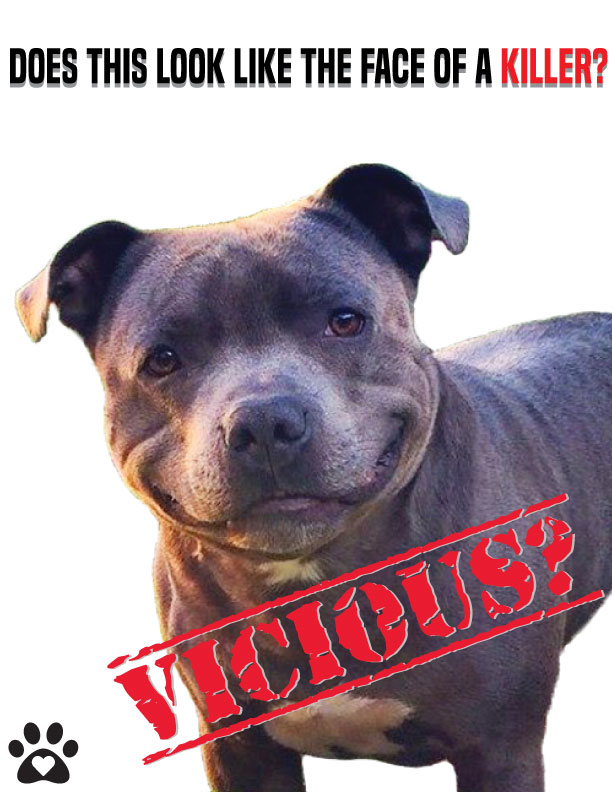

I chose this cause because it is something important to me.
Being an animal lover and a dog walker, I've seen first-hand how sweet and loving pitbulls can be.
There is this stigma about pitbulls being a dangerous breed, but this is due to irrisponsible owners who abuse them and use them for dog fights and other terrible things.
This is a stigma that is unfair because people are judging and trying to ban dogs based solely on their breed.
So my hopes for this poster is that it would shed light on this issue and make people open their minds and hearts when it comes to pitbulls and similar breeds of dogs.